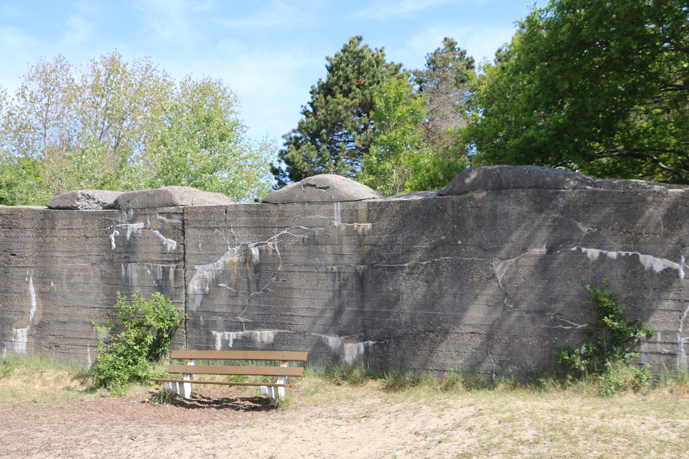
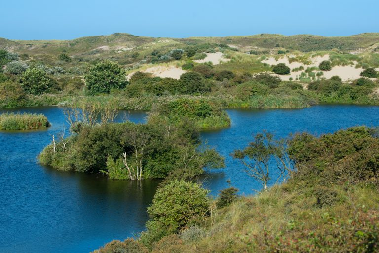
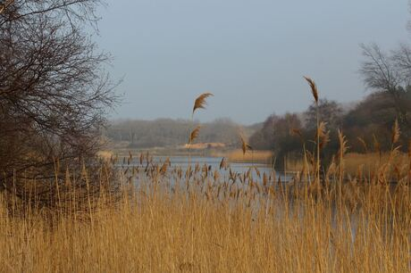
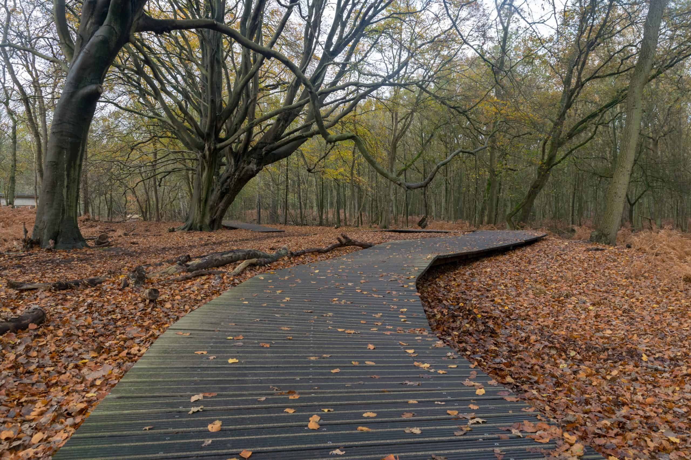

Je hebt 2 verschillende routes in het pandbos. Buiten deze routes om kan je natuurlijk zelf ook bepalen hoe je loopt.
Het natuurpad (blauweroute) is 1,6 KM lang.
Lange wandelroute (oranje route) is 2,9KM lang.
Als je de oranje route loopt kom je ook langs een klein deel van de Atlantikwall.

In het panbos zijn ook speelgelegenheden voor de kinderen. Hierdoor maakt het het wandelen al een stukje leuker.
Neem even pauze bij 1 van de speelgelegenheden en laat je kinderen lekker spelen en geniet zelf van het zonnetje.
Om het panbos in te komen moet je wel een dagkaart kopen.
Voor volwassen kost dat €2,00
Kinderen kunnen gewoon gratis mee naar binnen.
Meijendel is een prachtig gebied om in te wandelen. Het natuur landschap is hier wisselend.
Zo loop je in de bossen, duinen en het strand. Er zijn hier veel verschillende wandelroutes die je kan volgen.
De ene route is langer dan de andere. Hiervoor kan je bij het bezoekercentrum veel meer informatie krijgen.
Zo hebben ze voor de kinderen een heel monkey bos aan gelegd. De naam zegt het eigenlijk al.
De kinderen kunnen hier heerlijk klimmen en klauteren.
Aan het einde van het monkey bos is ook een heel groot speelveld. Dit zorgt dat je de gelegenheid hebt om te picknicken, voetballen en lekker spelen met je kinderen.
In het bos kom je verschillende speelgelegenheden tegen tijdens het wandelen, ook zijn er mooie bomen waar de kinderen goed in kunnen klimmen.
Hier door word het wandelen een stuk leuker voor de kinderen.
Vlakbij het bezoekercentrum hebben ze ook een leuk restaurantje zitten. Hier kan je heerlijk wat drinken en eten na je wandeling. Hier is genoeg voor jong en oud.
Op Sommige plekken zal je ook dieren zien lopen. Sommige lopen achter een hek en andere lopen echt vrij rond. Houd hierbij altijd afstand van de dieren en voer ze niet.
Voor het wandelen in Mijendel zijn geen kosten verbonden en kan je geheel gratis doen.

De amsterdamse waterleidings duinen is een heel groot gebied met verschillende plekken waar je je wandelroutes kan beginnen.
Ingang Panneland:
Hier vind je bij de ingang en uitgang van het bos een restaurantje. Hier kan je heerlijk wat eten en drinken na of voor je wandeling.
Dit stuk van de waterleidingsduinen is een prachtig stuk bos en duinen.
Er zijn een hoop verschillende routes die je kan lopen, zelf bedacht of het bezoekercentrum verkregen.
Als je hier rond loopt zal je ook veel herten zien rond lopen. Dit is voor je kinderen erg leuk om te zien. Zorg er wel voor dat ze dan niet te veel herrie maken en dat ze er niet achteraan gaan rennen.
Ook hier is het niet de bedoeling dat je de dieren voert.

Ingang de Oase:
Dit vind ik zelf een prachtig stukje om te wandelen met kinderen. Als je hier binnen komt zie je vrij snel aan je rechter hand een houten pad door eht bos heen lopen.
Dit is een geweldige plek om overheen te lopen met je kinderen. Die gaan dit zeker geweldig vinden. Dit is ook gelijk de route naar het bezoekerscentrum.
In het bezoekerscentrumkan je verschillende looproutes halen maar ook routes die je juist erg leuk met je kinderen kan lopen.
Bomenroute *: leer alles over bomen. Je krijgt voor 5 euro een rugzak te leen met de route, bomenboekje, meetlint, kompas en flesje water.
(Op) zoekkaart: wandel waarheen je maar wilt en ga op zoek naar bijvoorbeeld de watertoren, een brug, bladeren en allerlei dieren. Zorg dat je alles gezien hebt.
Expeditie Damhert: altijd al meer willen weten over de damherten? Koop het boekje voor 2,- en ga zelf op pad.
Word hulpboswachter *: spoorzoeken, vogels spotten, weetjes over damherten: als boswachter moet je veel weten en kunnen. Kosten zijn 5,- voor een rugzak.
